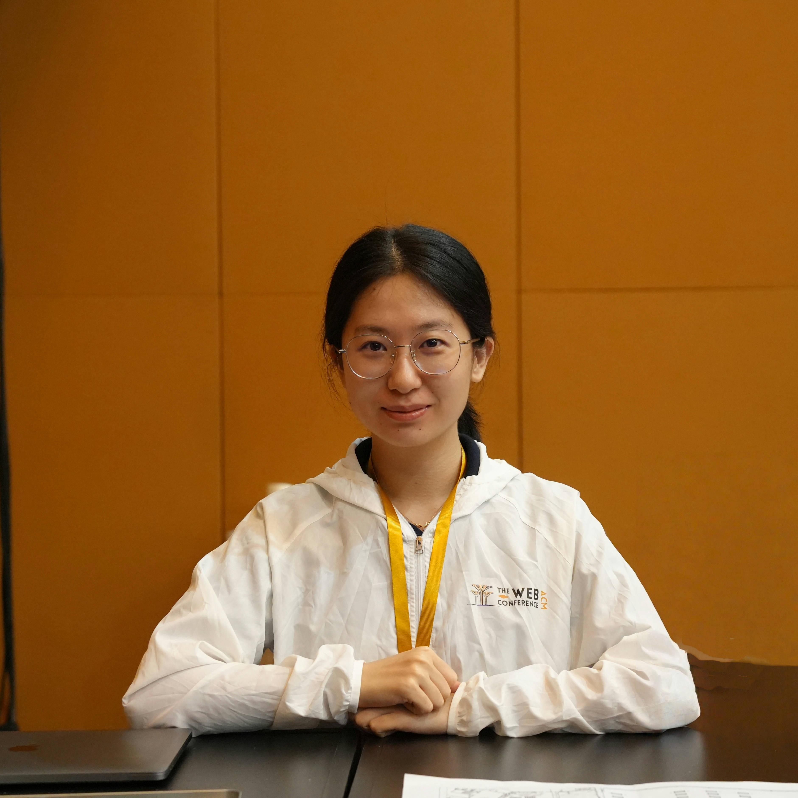

News
Apr 2025
【SIGIR'25】 We are giving a Tutorial titled Unveiling Knowledge Boundary of Large Language Models for Trustworthy Information Access.
|  |
Moxin Li
Ph.D. Candidate
NExT++
COM4, 3A Research Link, Singapore 119392
Email: moxinli98 AT gmail.com
|
My name is Moxin Li (李墨馨). I am a fourth-year Ph.D. candidate at NExT Research Center, National University of Singapore (NUS). I am fortunately advised by Prof. Tat-Seng Chua, mentored by Prof. Fuli Feng and Prof. Wenjie Wang. Before that, I graduated from Yuanpei College, Peking University in 2020 with a bachelor's degree.
Research Interests
My research centers around trustworthy language models. I focus on topics such as:
- Robustness: robust question answering by counterfactual reasoning [ACL 2022], [ACL 2023], robust prompt optimization [EMNLP 2023].
- Confidence calibration for mitigating hallucination [EMNLP 2024].
- Multi-objective alignment towards thorough and unbiased trustworthiness [ARR 2025 Under Review].
I'm also interested in:
- LLM Evaluation [ACL 2024, ARR 2025]
- Knowledge Boundaries in LLMs [ARR 2025]
- Prompt Optimization [EMNLP 2024, EMNLP 2023]
- Table-and-Text QA [ACL 2022]
See my Google Scholar and DBLP pages for full publication list.
I am actively seeking postdoc opportunities. Feel free to reach out!
Publications Google Scholar DBLP
*Equal Contribution In the Year of 2025:|
|
Self-improvement towards pareto optimality: Mitigating preference conflicts in multi-objective alignment
Moxin Li*, Yuantao Zhang*, Wenjie Wang, Wentao Shi, Zhuo Liu, Fuli Feng, Tat-Seng Chua Arxiv Github |
|
|
HellaSwag-Pro: A Large-Scale Bilingual Benchmark for Evaluating the Robustness of LLMs in Commonsense Reasoning
Xiaoyuan Li, Moxin Li, Rui Men, Yichang Zhang, Keqin Bao, Wenjie Wang, Fuli Feng, Dayiheng Liu, Junyang Lin Arxiv |
|
|
Knowledge Boundary of Large Language Models: A Survey
Moxin Li*, Yong Zhao*, Yang Deng, Wenxuan Zhang, Shuaiyi Li, Wenya Xie, See-Kiong Ng, Tat-Seng Chua Arxiv Github |
|
|
Counterfactual debating with preset stances for hallucination elimination of LLMs
Yi Fang, Moxin Li, Wenjie Wang, Hui Lin, Fuli Feng COLING 2025 |
|
|
TAT-LLM: A Specialized Language Model for Discrete Reasoning over Financial Tabular and Textual Data
Fengbin Zhu, Ziyang Liu, Fuli Feng, Chao Wang, Moxin Li, Tat Seng Chua ICAIF 2024 |
|
|
Think twice before trusting: Self-detection for large language models through comprehensive answer reflection
Moxin Li, Wenjie Wang, Fuli Feng, Fengbin Zhu, Qifan Wang, Tat-Seng Chua EMNLP Findings 2024 |
|
|
Dual-Phase Accelerated Prompt Optimization
Muchen Yang, Moxin Li, Yongle Li, Zijun Chen, Chongming Gao, Junqi Zhang, Yangyang Li, Fuli Feng EMNLP Findings 2024 |
|
|
Evaluating mathematical reasoning of large language models: A focus on error identification and correction
Xiaoyuan Li, Wenjie Wang, Moxin Li, Junrong Guo, Yang Zhang, Fuli Feng ACL Findings 2024 |
|
|
Don't Just Say "I don't know"! Self-aligning Large Language Models for Responding to Unknown Questions with Explanations
Yang Deng, Yong Zhao, Moxin Li, See-Kiong Ng, Tat-Seng Chua EMNLP 2024 |
|
|
Robust prompt optimization for large language models against distribution shifts
Moxin Li, Wenjie Wang, Fuli Feng, Yixin Cao, Jizhi Zhang, Tat-Seng Chua EMNLP 2023 (Oral) Github |
|
|
Hypothetical Training for Robust Machine Reading Comprehension of Tabular Context
Moxin Li, Wenjie Wang, Fuli Feng, Hanwang Zhang, Qifan Wang, Tat-Seng Chua ACL Findings 2023 Github |
|
|
Doc2SoarGraph: Discrete Reasoning over Visually-Rich Table-Text Documents with Semantic-Oriented Hierarchical Graphs
Fengbin Zhu, Chao Wang, Fuli Feng, Zifeng Ren, Moxin Li, Tat-Seng Chua LREC-COLING 2024 |
|
|
Soargraph: Numerical reasoning over financial table-text data via semantic-oriented hierarchical graphs
Fengbin Zhu, Moxin Li, Junbin Xiao, Fuli Feng, Chao Wang, Tat Seng Chua WWW 2023 (Workshop) |
|
|
Learning to imagine: Integrating counterfactual thinking in neural discrete reasoning
Moxin Li, Fuli Feng, Hanwang Zhang, Xiangnan He, Fengbin Zhu, Tat-Seng Chua ACL 2022 Github |
|
|
Hybrid learning to rank for financial event ranking
Fuli Feng, Moxin Li, Cheng Luo, Ritchie Ng, Tat-Seng Chua SIGIR 2021 Github |
|
|
Learning sense representation from word representation for unsupervised word sense disambiguation
Jie Wang, Zhenxin Fu, Moxin Li, Haisong Zhang, Dongyan Zhao, Rui Yan AAAI 2020 (Student Abstract) |
Professional Service and Presentation
|
|
Education
| School of Computing, National University of Singapore (NUS)Aug. 2021 - Now, Singapore Ph.D. in Computer Science Advisor: Prof. Tat-Seng Chua Mentors: Prof. Fuli Feng and Prof. Wenjie Wang |
| Yuanpei College, Peking University (PKU) Sep. 2016 - Jun. 2020, Beijing Bachelor in Intelligent Science and Technology |
Experiences
| Research Intern, Sep. 2020 - Jul. 2021 NExT Research Center, National University of Singapore Advisior: Prof. Tat-Seng Chua and Prof. Fuli Feng |
| Research Intern, Jun. 2019 - Jun. 2020 Wangxuan Institute of Computer Technology, Peking University Advisior: Prof. Rui Yan |
Honors and Awards
|
Research Achievement Award, 2023
School of Computing, National University of Singapore |

Last update: Apr, 2025. Webpage template borrows from Dr. Fengbin Zhu.